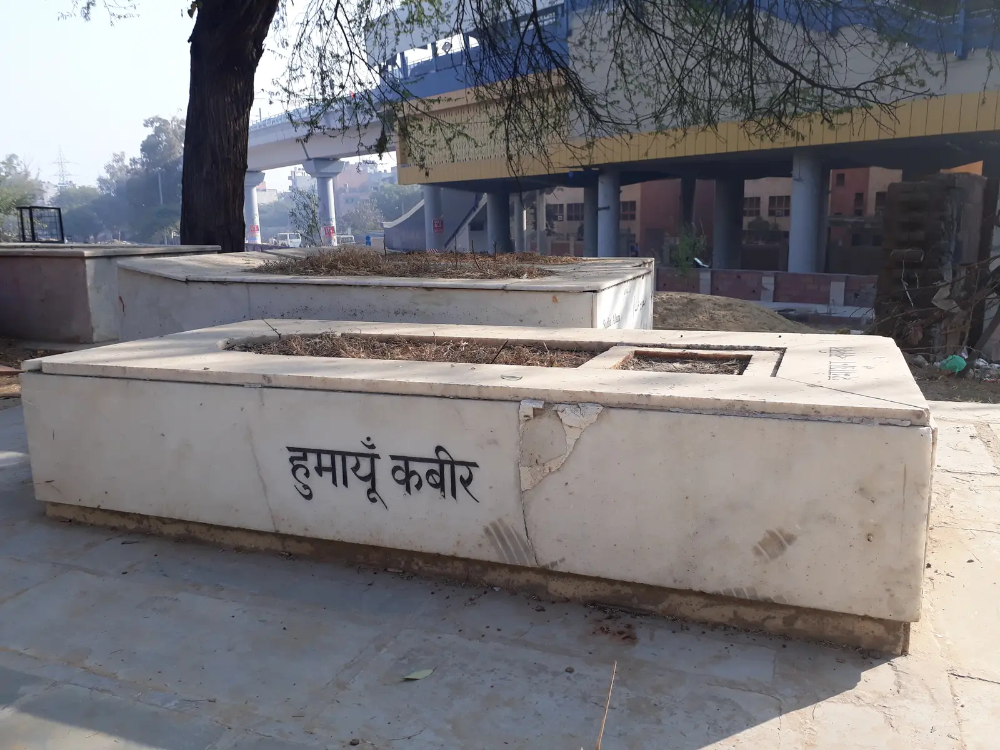

Chapter 11 of 22
Arrival in Qadian and Visit to Bahishti Maqbara
Tuesday, November 26, 2024 · Part IV

Welcome at Sara-i-Waseem Guest House
When we finally arrived at Sara-i-Waseem Guest House, the warmth of the welcome was unforgettable. Recent graduates and students of Jamia Ahmadiyya Qadian lined up outside, greeting us with chants of “Welcome” in Urdu and “You are most welcome” in Punjabi. Though strangers to us, their genuine smiles and enthusiasm instantly made us feel at home.
The guest house itself is a stunning blend of tradition and modernity. Spacious and beautifully designed, it gave the delegation welcoming places to dine, gather, and rest.
As we stepped off the buses, phones were already out. People were snapping pictures of Minarat-ul-Masih, glowing in the night sky, and sharing them instantly across social media and WhatsApp groups. Excited messages began pouring in from loved ones back home, sharing in our joy of finally reaching this sacred destination.
After a quick refresh, we left for Bahishti Maqbara, the heavenly graveyard, even though it was quite late. Despite our exhaustion, the spiritual pull of this place made it impossible to wait until morning.
Bahishti Maqbara: The Heavenly Graveyard
The short walk to Bahishti Maqbara felt surreal. Security at the entrance ensured a smooth entry. The serenity of the place enveloped us as soon as we stepped inside. True to its name, it felt like a piece of heaven on earth—peaceful, quiet, and imbued with spiritual significance.
Bahishti Maqbara is reserved for those who pledged at least 10% of their wealth to the mission of Islam Ahmadiyyat. These individuals were committed to the highest standards of taaleem (education) and tarbiyyat (spiritual training), leaving behind legacies of sacrifice and dedication.
At the heart of this sacred space lies Qit’a-e-Khas, a special section reserved for Hazrat Mirza Ghulam Ahmad (as), his family, and a few close companions. The Promised Messiah (as) rests at the center of this section. To his right is a memorial for his wife, Hazrat Nusrat Jahan Begum (ra), who is buried at the Bahishti Maqbara in Rabwah. To his left, closest to the Qit’a fence, lies Hazrat Maulvi Noor-ud-Din (ra), his most loyal companion and the first Khalifa of the Ahmadiyya Muslim Community.
As we approached the Qit’a-e-Khas, we stopped at its fence to deliver Salam to the Promised Messiah (as) on behalf of the Holy Prophet Muhammad (saw). This moment fulfilled the hadith of the Prophet (saw):
When you meet the Messiah, convey my Salam to him, even if you must crawl over ice to do so.
This hadith reflects the profound connection between the Holy Prophet Muhammad (saw) and the Promised Messiah (as). It is a testament to the high spiritual station of Hazrat Mirza Ghulam Ahmad (as), who was chosen to revive Islam and reignite the light of the Prophet’s message in the latter days. Standing at the maqbara, it was impossible not to feel the weight of that legacy.
The Promised Messiah (as) expressed his love for the Holy Prophet (saw) in his writings and poetry with a depth that words can scarcely convey:
He is our leader; the source of all light.
His name is Muhammad, my beloved.
He further declared:
After Allah, it is the love of Muhammad that I find myself intoxicated in.
If this is blasphemy, then by God, I am the greatest infidel.
Standing in this sacred space, offering prayers for the Promised Messiah (as) and reflecting on his love for the Holy Prophet (saw), was a humbling and deeply moving experience.
Returning to the Guest House
With hearts full of gratitude, we made our way back to Sara-i-Waseem. The Minarat-ul-Masih stood tall in the distance, glowing softly and guiding us like a beacon. Phones continued to capture its beauty as we shared pictures and videos with family and friends.
Exhausted but spiritually rejuvenated, we prepared to rest for the night. It had been a day of immense learning and spiritual fulfillment. From Ludhiana to Hoshiarpur to Qadian, we had followed in the footsteps of the Promised Messiah (as). We couldn’t wait to explore Qadian further in the morning, but for now, it was time to reflect, rest, and recharge for the journey ahead.